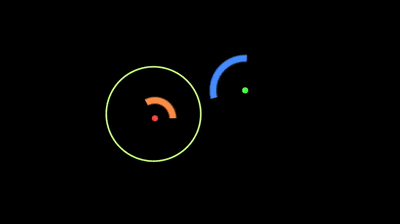
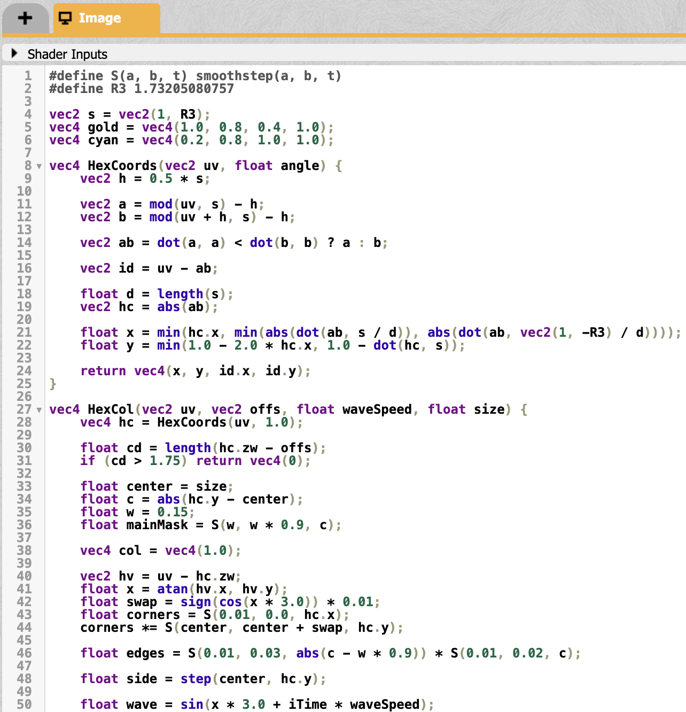
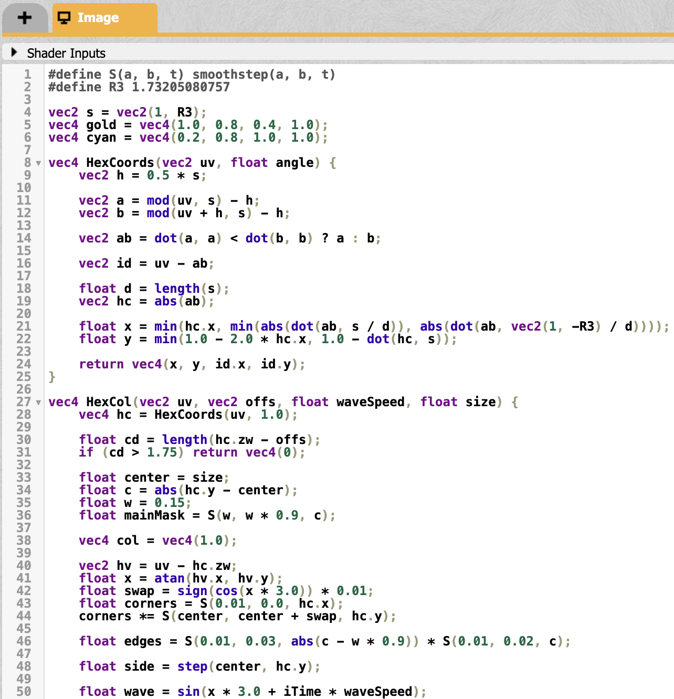
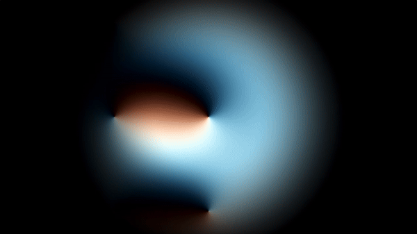
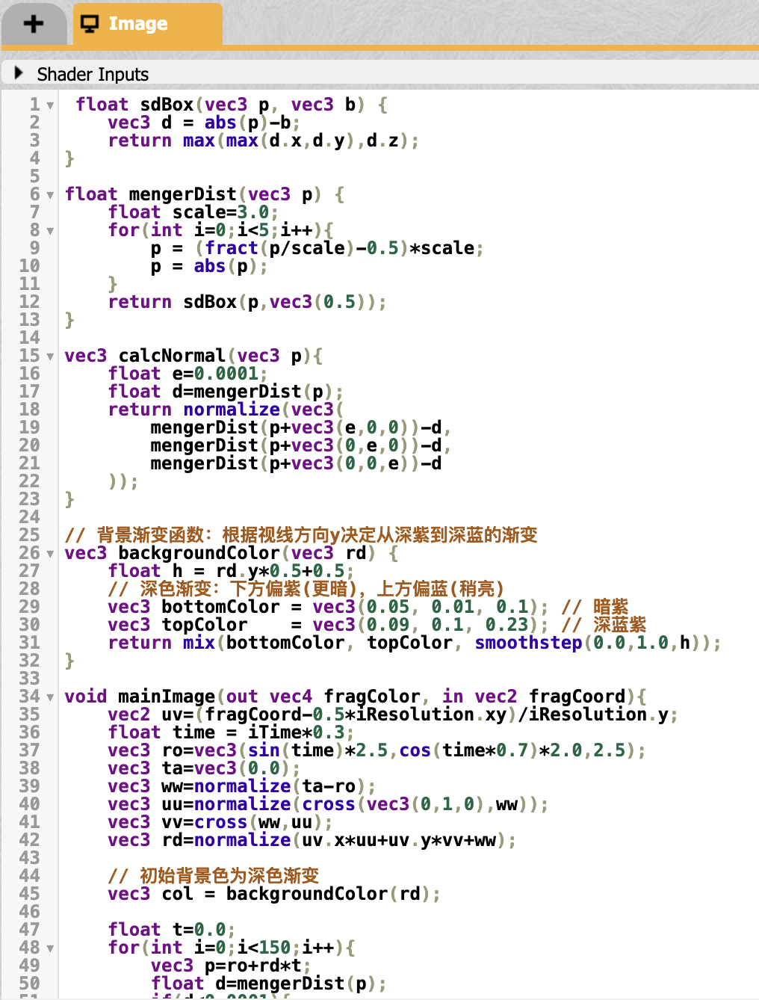
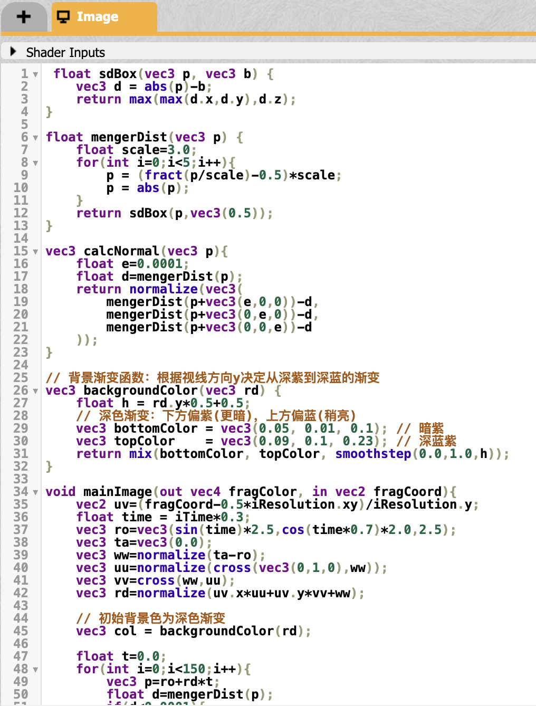

This project showcases 15 different shades created on ShaderToy, ranging from 2D to 3D visuals. The shades are grouped into 10 types, each exploring different ways to use light, color, and depth. From simple 2D gradients to more complex 3D shapes, the goal is to experiment with how shaders can create dynamic and immersive effects. This project aims to explore new ways of perceiving space and visual effects in digital environments.
The palette function maps input values to soft RGB gradient colors. The rot function performs 2D coordinate rotation, adding rotational effects to the pattern. In mainImage, screen coordinates are normalized and iteratively scaled and rotated in a loop. During each iteration, interference stripes are calculated based on distance (using sine wave interference) and colors are layered with exponential decay to enhance stripe effects. The final output is a dynamic rotating gradient pattern with intricate light and interference details, creating a visually striking effect.
The hash11 function creates random values, and randomInCircle distributes points uniformly within a circle. LayerPattern places points, applies motion over time, and calculates glow effects and line distances between points. Multiple layers (8) with varying scales and fades are combined to enrich the structure. The colors dynamically change with time, using smooth gradient transitions. A vignette effect reduces brightness toward the edges, while the glow and brightness remain stable for a clear, vivid visual output.

The hash11 and randomInCircle create uniformly distributed random points in a circle, while lineDist calculates distances between points and lines for smooth glowing effects. Each layer (LayerPattern) scales and animates points with subtle time-based motion, connecting points with smooth lines and fading based on distance and layer index. Multiple layers (8) are combined for rich structure. The colors transition smoothly over time, with a vignette effect darkening edges, producing a vibrant, intricate, and dynamic visual effect.
The cube function defines a layered cube structure with outer and inner boundaries. Transformations (h, v, ch, cv) rotate and distort the shapes dynamically over time using trigonometric functions. The ray-marching loop calculates distances (s) to the object surface, combining multiple effects like oscillating boundaries, rotation, and scaling. The H function adds smooth gradient colors based on distance and position, creating vibrant shading. The result is a visually rich animation with dynamic geometry and color transitions.

It combines a sphere with oscillating size (GetDistance) and gyroid texture using a smooth minimum (smin). The gyroid pattern adds intricate surface detail based on trigonometric functions. A ray-marching algorithm (RayMarch) calculates intersections by stepping along a ray, refining the object's surface precision. The GetNormal function computes surface normals for lighting effects. The dynamic sphere's size changes over time (iTime), enhancing the animated visual complexity of the textured object. The code increases ray-marching steps for smoother and more detailed rendering.

The arcSegment function renders curved segments defined by radius, start, and end angles, which animate over time. The point function creates glowing points at dynamic positions, while the circle function draws a smooth connecting line between the two centers with adjustable thickness. The arcs, points, and line dynamically change position and size based on time (iTime), generating smooth, flowing animations with vibrant colors. The result is a visually appealing composition of arcs and connections. 
The HexCoords function computes hexagonal coordinates, while HexCol renders individual hexagons with dynamic properties like edges, corners, and shading, influenced by animations over time (iTime). The grid pulsates and shifts with time-based fading (fade) and slight distortions. Two hexagonal layers (hex1, hex2) alternate between gold and cyan colors, blending based on animations and positions. The result is a vibrant, animated, and intricate hexagonal pattern with smooth transitions, wave-like distortions, and dynamic interactions between layers.
 

The U function extracts specific bits to compute directional offsets, and A calculates angles for animation. The shader iterates through packed constants to generate oscillating angular values (s) that influence the colors. The color is determined by sine waves that shift over time (iTime) and blend smoothly based on distance from the center (z). The result is a visually dynamic, pulsating pattern with vibrant, time-varying hues and radial fading effects. 
The sdBox function calculates the signed distance to a box, and mengerDist recursively computes the fractal’s distance field. The camera moves dynamically (ro and rd), with a gradient background transitioning from deep purple to dark blue. The ray-marching loop iterates to trace rays, stopping when the fractal's surface is hit. If hit, normals are calculated (calcNormal) for lighting, blending cyan highlights with magenta shadows for a neon effect. If no hit occurs, the background gradient remains.
 

The mapScene function defines the geometry, warping space by rotating and mirroring the coordinates to form a repetitive tunnel-like structure. A dynamic camera (ro and rd) moves around the scene, and the ray-marching loop traces rays to detect surfaces. When a surface is hit, the normal is calculated (normal), and lighting is applied using directional diffuse shading for a soft glow. The result is a tunnel with smooth, colorful gradients, animated by time (iTime). Unhit rays display a dark background, enhancing depth. Gamma correction ensures smooth, vibrant visuals.